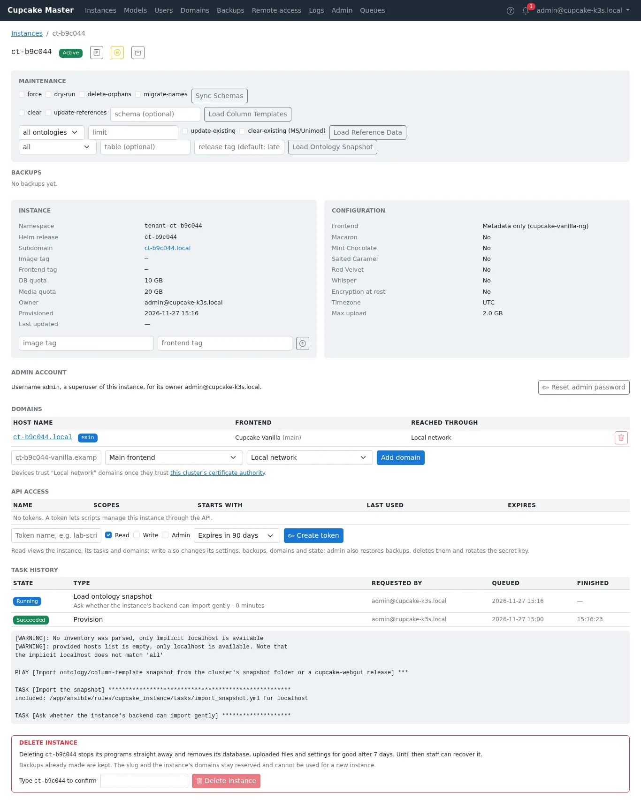
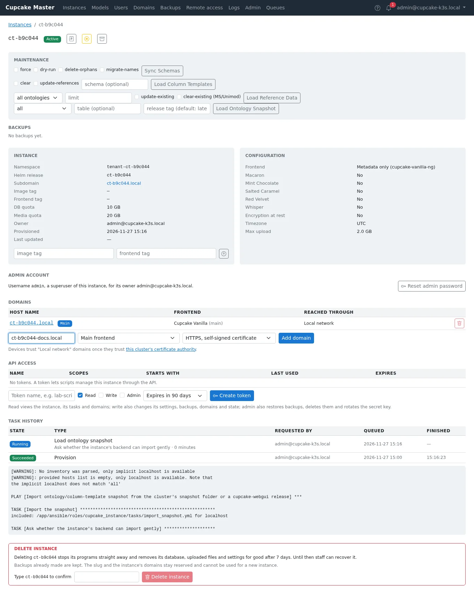
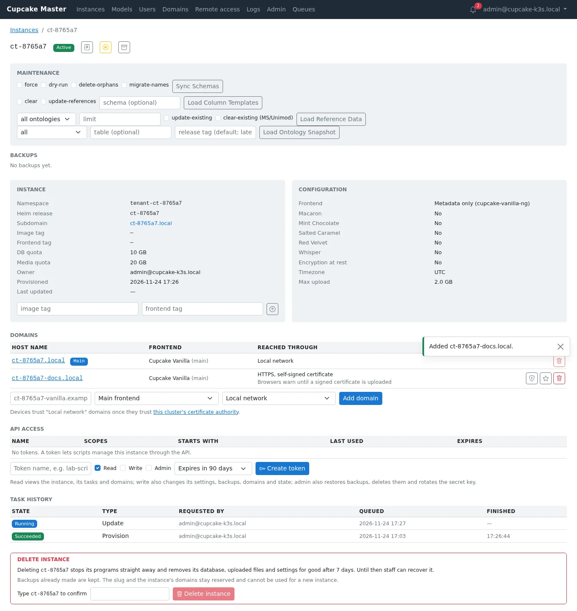
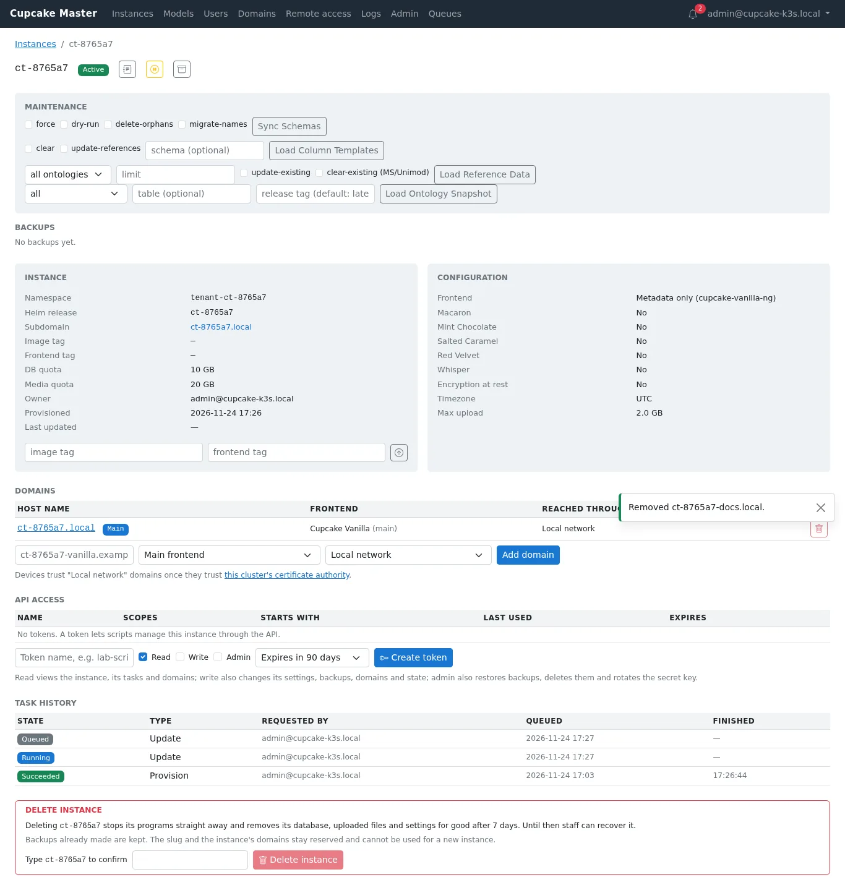
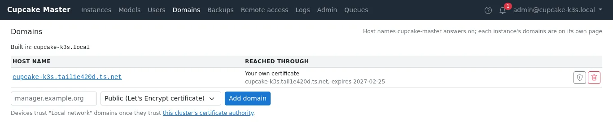
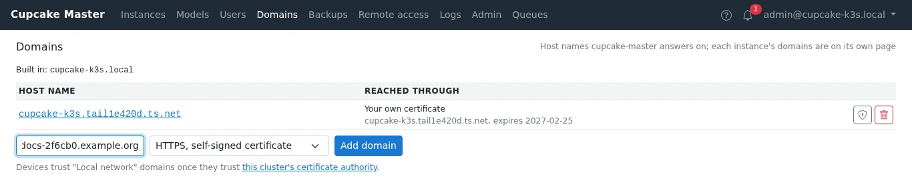
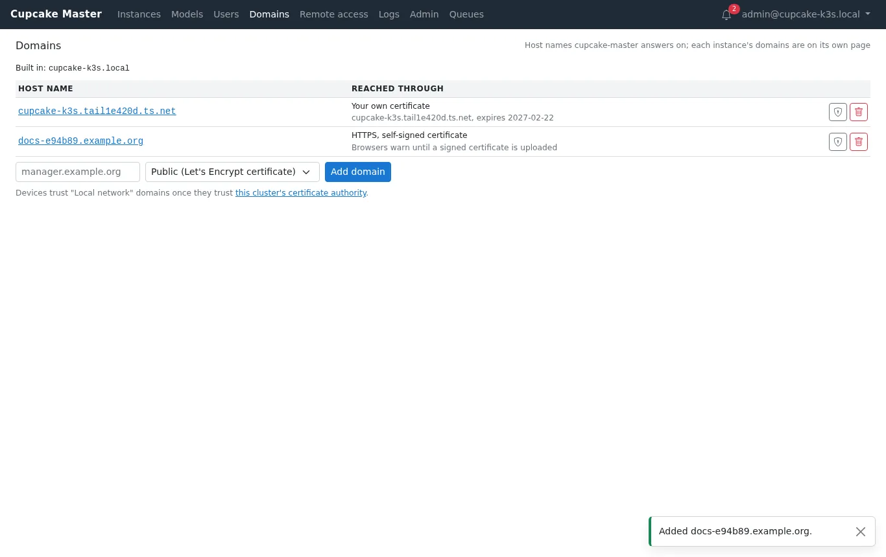
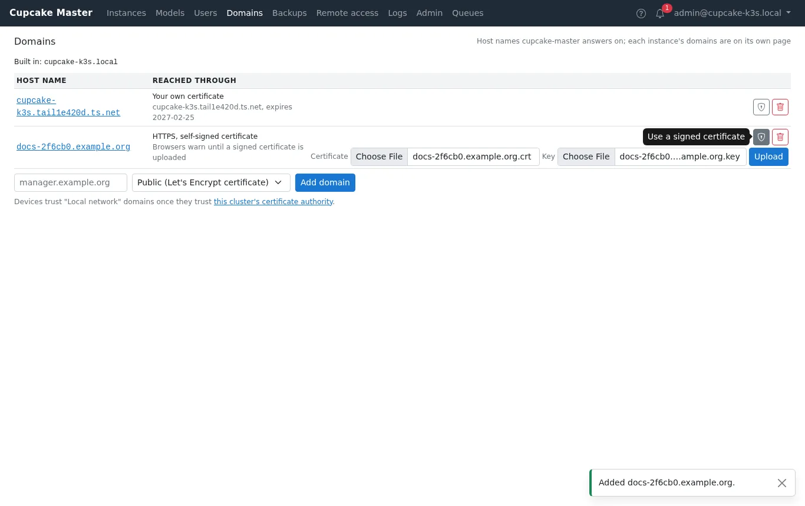
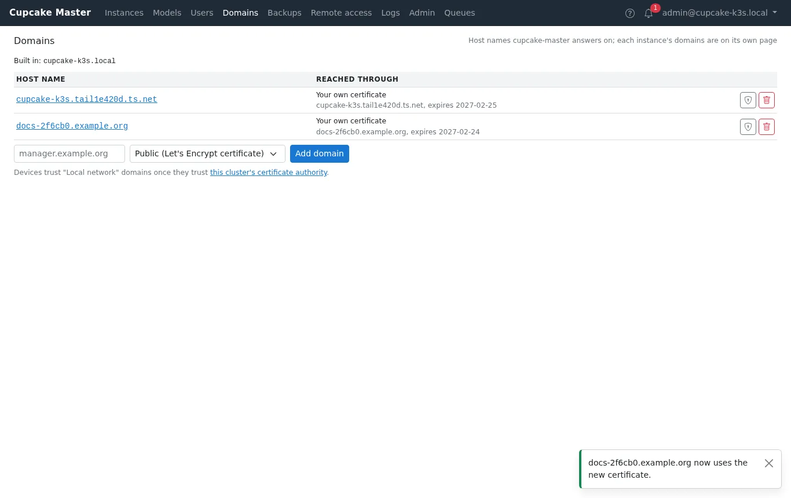
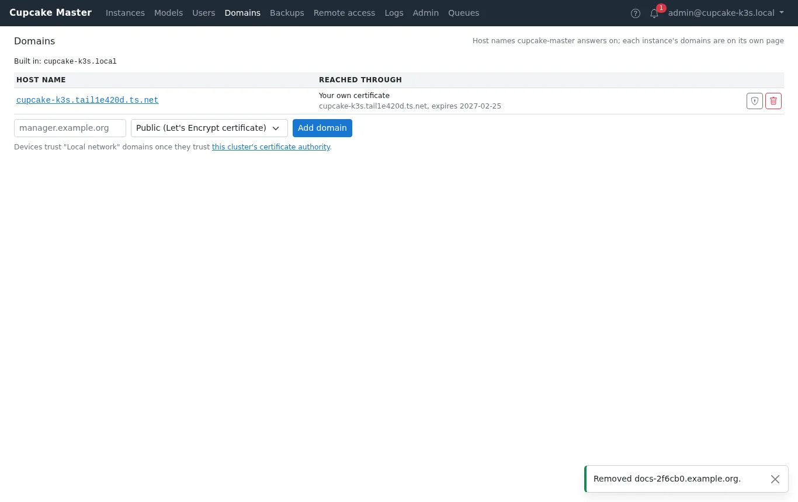

Every instance gets an address under the cluster's domain, such as lab1.local. More host names can be added to an
instance, or to cupcake-master itself, each reached one of these ways:
| Reached through | Certificate |
|---|---|
| Local network | Signed by the cluster's own certificate authority; devices trust it once they trust the cluster |
| Public | A free Let's Encrypt certificate; the name must point at the cluster from the internet |
| Your own certificate | A certificate and key you upload, for example from your institution |
| HTTPS, self-signed certificate | Encrypted, but browsers warn until a signed certificate is uploaded |
| Cloudflare Tunnel | Cloudflare's certificate; see remote access |
| Tailscale | Tailscale's certificate; the domain becomes a device on your tailnet |
A host name can only be used once. Under the cluster's domain an instance may use its slug, or its slug followed by
-<name>, so instances cannot take each other's names. Plain HTTP requests are redirected to HTTPS.
Adding a domain to an instance
- On the instance's page, Domains lists its host names.

- Enter the host name and how it is reached, then choose Add domain.

- The instance is updated to answer on it; its programs restart briefly.

Remove takes a domain away again. The main domain cannot be removed; make another one the main domain first.

cupcake-master's own domains
Domains, in the top menu, lists the host names cupcake-master itself answers on.

Add one the same way. Without a certificate for it yet, choose HTTPS, self-signed certificate:


Using your own certificate
Use a signed certificate (or Replace the certificate) asks for the certificate, with any intermediates, and its key, each as a PEM file.

The domain then uses your certificate. Its expiry is shown, and staff are warned two weeks before it.

